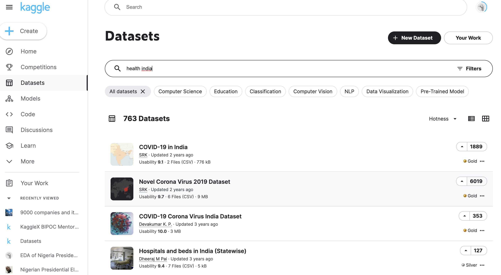
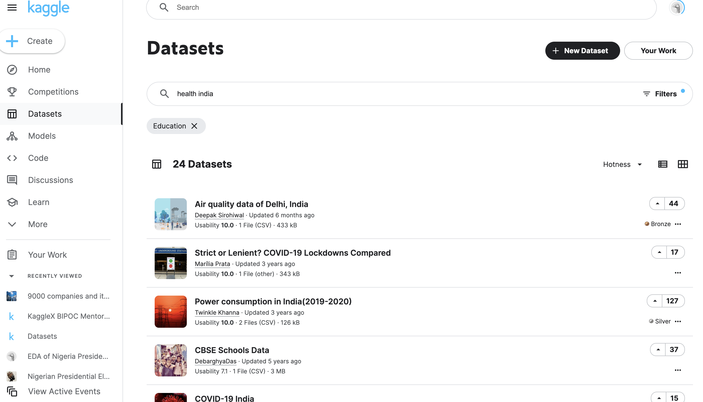
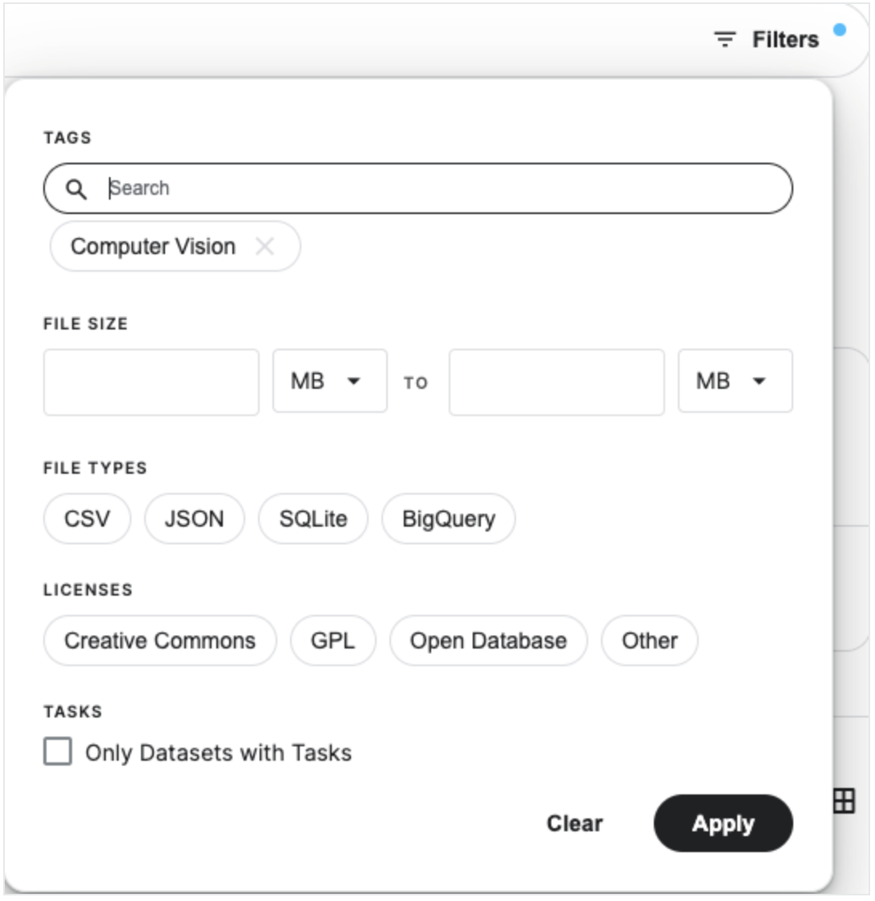
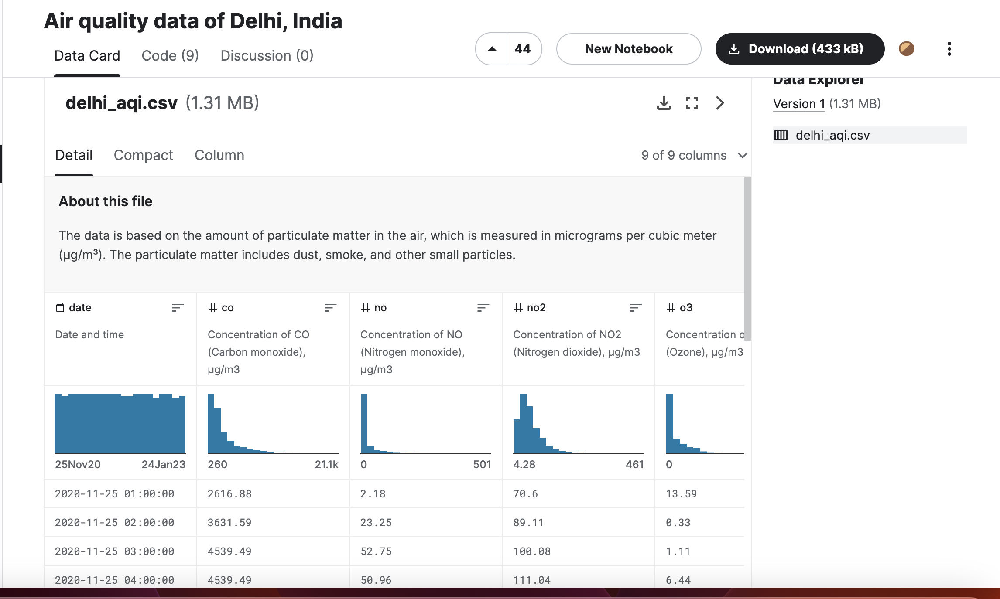
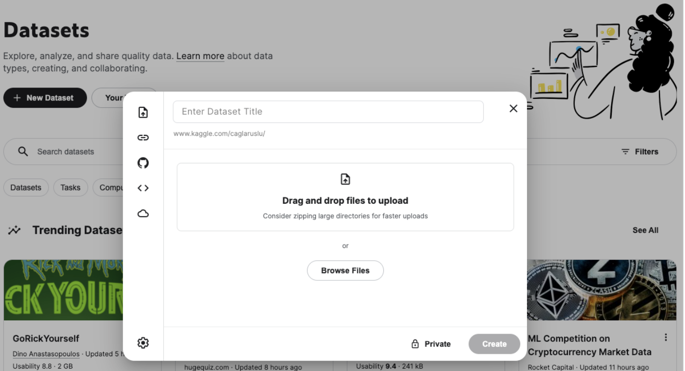

Kaggle Datasets#
Kaggle is a platform that offers a vast array of resources and tools for data science and machine learning. Journalists can leverage Kaggle in several ways to assist in their data journalism efforts:
Datasets: Kaggle hosts a huge number of datasets on a wide variety of topics, from politics and economics to health, science, and culture. Journalists can use these datasets to find data for their stories, explore new topics, or gain a deeper understanding of their area of interest.
Kernels (Code): Kaggle allows users to write and share code in an environment called a kernel. Kernels can be used to analyze data, build models, create visualizations, and more. Journalists can use kernels to perform their own analyses, or they can learn from the code that others have written.
Competitions: Kaggle hosts machine learning competitions where users are challenged to create the best model for a specific task. While journalists may not participate directly in these competitions, they can learn a lot from the methods and techniques used by participants.
Courses: Kaggle offers free courses on a variety of data science topics, including Python, machine learning, data visualization, and more. These courses can be a great way for journalists to learn new skills or improve their existing skills.
Community: Kaggle has a large and active community of data scientists, statisticians, and machine learning practitioners. Journalists can use the community to ask questions, get help, or find collaborators for their projects.
How to use Kaggle Datasets#
Kaggle gives you access to a wide variety of top-quality datasets shared by other users. You can easily find the datasets you want with just a few search and filtering methods.
Datset Search Filters
To search for a dataset, write your keywords in the search field, as shown in Figure 4.1. Here you can see that we can access several datasets about the pandemic just by typing “health india” in the search bar.

You can search datasets by tag also

Kaggle allows you to download any dataset for free, but depending on what you are going to use it for, you may need to pay attention to the license type of the datasets. In some cases, it is possible that you may need to obtain additional permissions from their owners in case you want to use a dataset for an academic paper or in case you intend to use it for commercial purposes.
There are three main license types on Kaggle:
1. Creative Commons: There are several kinds of Creative Commons licenses:
CCO, which stands for public domain and means that the dataset is available to everyone under any circumstances.
CC-BY, which requires the dataset user to credit its owner.
CC-BY-SA, which also requires the owner to be credited and adds the condition that the dataset keeps the same kind of license even after it’s modified.
2. GPL: This license basically provides four main usage options:
Firstly, you get unlimited use of a dataset.
You also have the possibility to examine how the dataset works, and modify it.
Additionally, you are entitled to the unlimited distribution of copies of the dataset.
And lastly, you can distribute the modified version of the dataset as well.
3. Open Database: This allows users to share, modify and use the dataset but it makes it mandatory to establish the same kind of license for the modified dataset.
You can filter datasets too

The Data Explorer section allows you to quickly browse through the content and structure of the datasets. It gives you an overview of the files and the columns in the data, as well as their histogram graphs

Custom Datasets
You can also upload and use your own datasets in Kaggle. This feature comes in handy when you have your own dataset or when you’ve modified a dataset and want to use it in your notebook. In order to upload a dataset, first, you need to zip your main dataset file. Then click on “New Dataset” in the Datasets section. Give your dataset a name and upload your zip file

Kaggle is great platform to source datasets which can be useful for data stories and experimentation with analysis and outcomes, collaborative efforts usually lead to better data longevity and access to vast amounts of sector agnostic ideas and datasets which when the ecosystem maintains and operates well would always lead to better outcomes and research